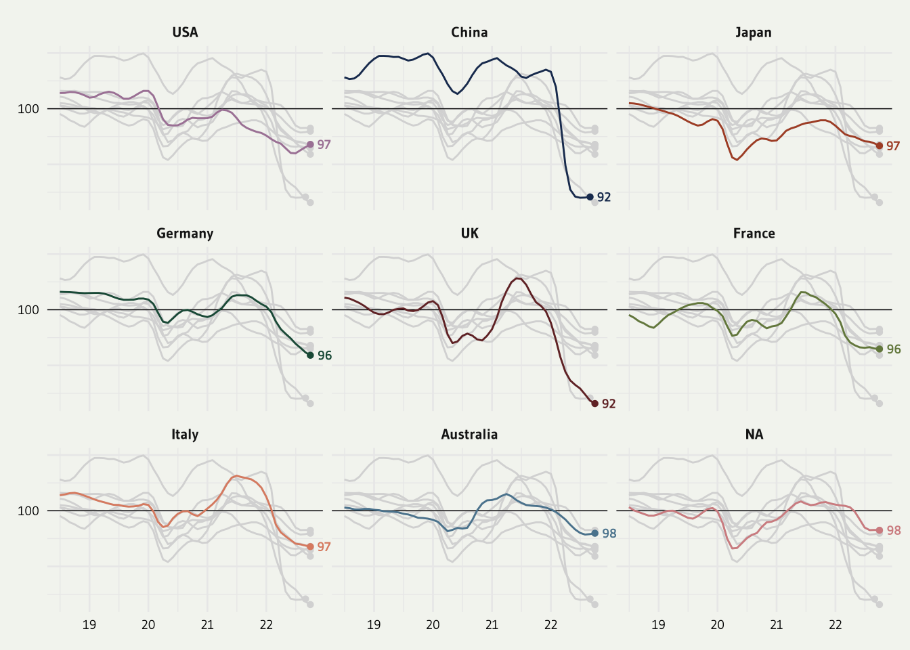

About
This page showcases the work of Gilbert Fontana, initially published in the Visual Capitalist.
This plot is a small multiple line chart. It shows the evolution of a metric (the consumer confidence around the world) in the last few years. Each item of the small multiple provides the evolution of a specific country.
Interestingly, all other countries are displayed too, but nicely faded out. As a retult, the evolution of the target country is obvious, and it’s possible to put it in perspective with other countries.
Nice chart! Let’s see how to build it with R and the tidyverse.

Load packages
As usually, let’s start by loading some libraries. A bunch of them are necessary to allow the high degree of customization we’re dealing with.
Briefly, tidyverse is the package that wraps everything
we often need like the ggplot2. librarie.
patchwork is pretty handy to position items on the final
figure. ggtext and gghighlight are 2 ggplot
extension useful to deal with labels.
library(tidyverse)
library(janitor)
library(showtext)
library(MetBrewer)
library(scico)
library(ggtext)
library(patchwork)
library(gghighlight)Load and prepare the data
The data is hosted on the github page of the R graph gallery. You can check the original article for more about it, since we’re covering the technical part of the chart creation only here.
Let’s load the dataset and clean it. lubridate is used to
deal with date, it’s a life saver and you can read more about it in
its doc.
pivot longer allows to switch from a “wide” to a “long”
or “tidy” format that is much easier to work with.
df1 <- read.csv("https://raw.githubusercontent.com/holtzy/R-graph-gallery/master/DATA/dataConsumerConfidence.csv") %>%
mutate(date=lubridate::my(Time)) %>%
select(-Time) %>%
pivot_longer(!date, names_to = "country", values_to = "value") %>%
na.omit()Miscellaneous
There are a bunch of small utils that will be used later on: font, theme, colors, caption. Everything one needs to make a chart looks professional.
#### MISC ####
font <- "Gudea"
font_add_google(family=font, font, db_cache = TRUE)
fa_path <- systemfonts::font_info(family = "Font Awesome 6 Brands")[["path"]]
font_add(family = "fa-brands", regular = fa_path)
theme_set(theme_minimal(base_family = font, base_size = 10))
bg <- "#F4F5F1"
txt_col <- "black"
showtext_auto(enable = TRUE)
caption_text <- str_glue("**Design:** Gilbert Fontana<br>","**Data:** OECD, 2022")The main line chart
Converting a plot from cartesian to circular (polar) coordinates in
ggplot2 is as easy as adding a
coord_polar() call to the plot.
p1 <- df1 %>%
ggplot() +
geom_hline(yintercept = 100,linetype="solid", size=.25) +
geom_point(data=df1 %>%
group_by(country) %>%
slice_max(date),
aes(x=date, y=value, color=country),shape=16) +
geom_line(aes(x=date, y=value, color=country)) +
gghighlight(use_direct_label = FALSE,
unhighlighted_params = list(colour = alpha("grey85", 1))) +
geom_text(data=df1 %>%
group_by(country) %>%
slice_max(date),
aes(x=date, y=value, color=country, label = round(value)),
hjust = -.5, vjust = .5, size=2.5, family=font, fontface="bold") +
scale_color_met_d(name="Redon") +
scale_x_date(date_labels = "%y") +
scale_y_continuous(breaks = c(90,95,100,105,110),
labels = c("","","100","","")
) +
#facet_wrap(~ country) +
facet_wrap(~ factor(country, levels=c('USA','China','Japan','Germany', 'UK','France', 'Italy', 'South Korea', 'Australia'))) +
coord_cartesian(clip = "off") +
theme(
axis.title = element_blank(),
axis.text = element_text(color=txt_col, size=7),
strip.text.x = element_text(face="bold"),
plot.title = element_markdown(hjust=.5,size=34, color=txt_col,lineheight=.8, face="bold", margin=margin(20,0,30,0)),
plot.subtitle = element_markdown(hjust=.5,size=18, color=txt_col,lineheight = 1, margin=margin(10,0,30,0)),
plot.caption = element_markdown(hjust=.5, margin=margin(60,0,0,0), size=8, color=txt_col, lineheight = 1.2),
plot.caption.position = "plot",
plot.background = element_rect(color=bg, fill=bg),
plot.margin = margin(10,10,10,10),
legend.position = "none",
legend.title = element_text(face="bold")
)
p1
Title and Subtitle
Last step: adding a title and a substitle to get the complete figure:
text <- tibble(
x = 0, y = 0,
label = "The consumer confidence indicator provides an indication of future developments of households’ consumption and saving. An indicator above 100 signals a boost in the consumers’ confidence towards the future economic situation. Values below 100 indicate a pessimistic attitude towards future developments in the economy, possibly resulting in a tendency to save more and consume less. During 2022, the consumer confidence indicators have declined in many major economies around the world.<br>"
)
sub <- ggplot(text, aes(x = x, y = y)) +
geom_textbox(
aes(label = label),
box.color = bg, fill=bg, width = unit(10, "lines"),
family=font, size = 3, lineheight = 1
) +
coord_cartesian(expand = FALSE, clip = "off") +
theme_void() +
theme(plot.background = element_rect(color=bg, fill=bg))
# TITLE
text2 <- tibble(
x = 0, y = 0,
label = "**Consumer Confidence Around the World**<br>"
)
title <- ggplot(text2, aes(x = x, y = y)) +
geom_textbox(
aes(label = label),
box.color = bg, fill=bg, width = unit(12, "lines"),
family=font, size = 10, lineheight = 1
) +
coord_cartesian(expand = FALSE, clip = "off") +
theme_void() +
theme(plot.background = element_rect(color=bg, fill=bg))
finalPlot <- (title+sub)/p1 +
plot_layout(heights = c(1, 2)) +
plot_annotation(
caption = caption_text,
theme=theme(plot.caption = element_markdown(hjust=0, margin=margin(20,0,0,0), size=6, color=txt_col, lineheight = 1.2),
plot.margin = margin(20,20,20,20),))
#showtext_opts(dpi = 600)
# Save the figure
#ggsave("consumer_confidence.png",
# bg=bg,
# height = 8,
# width = 5,
# dpi = 600)Conclusion
Thanks so much to Gilbert Fontana for sharing his code and creating this awesome plot. Check the line chart section of the gallery for more examples!